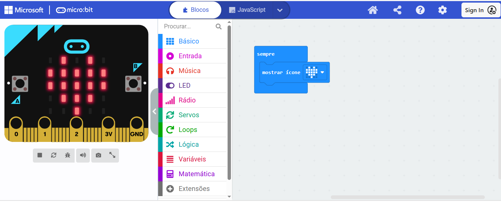
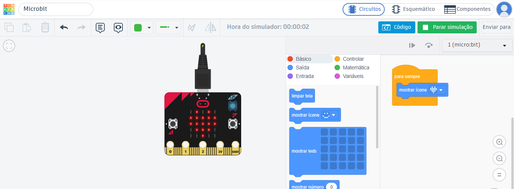
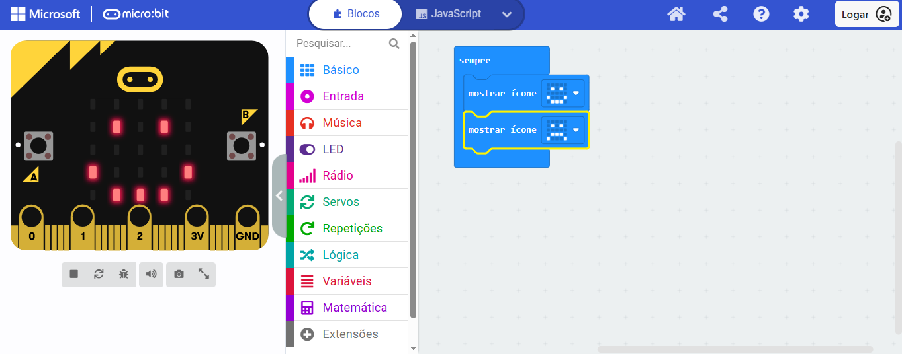
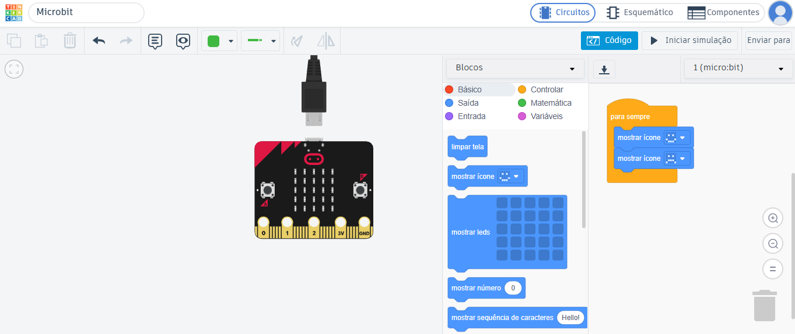
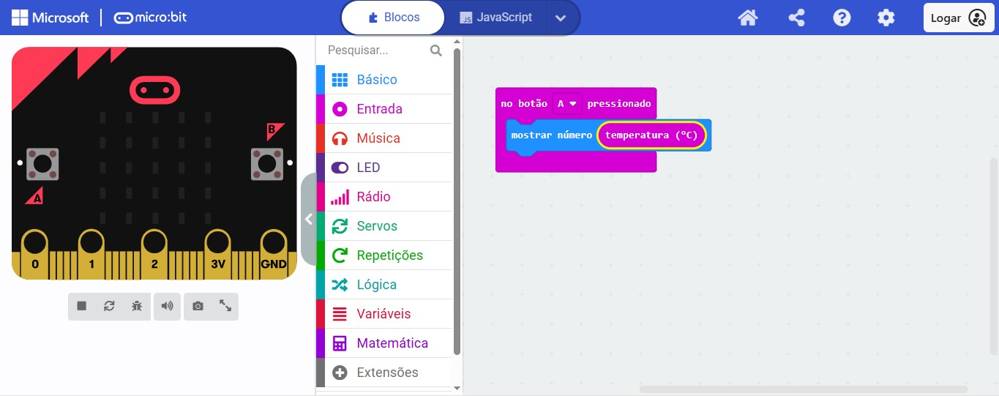
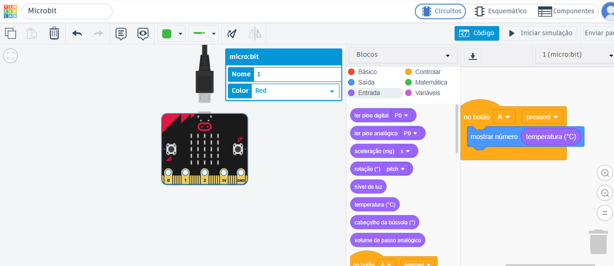
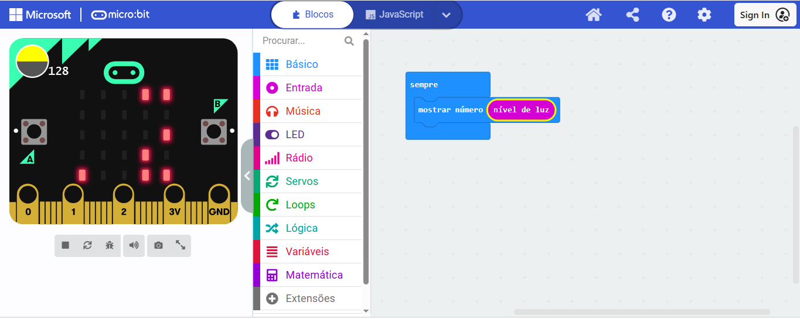
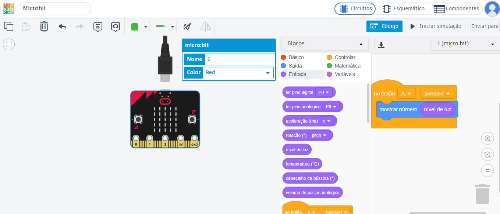
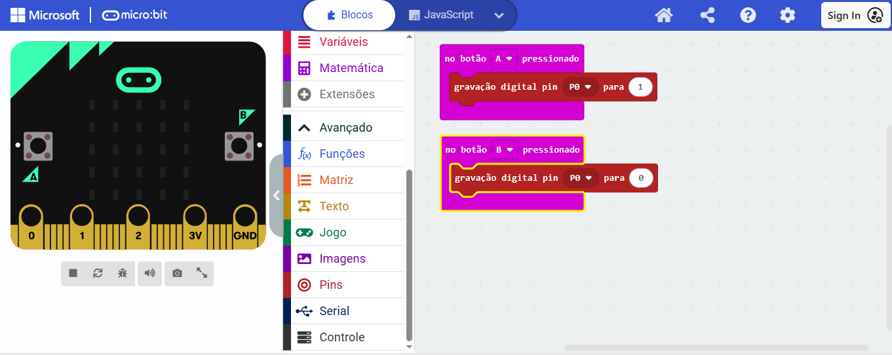
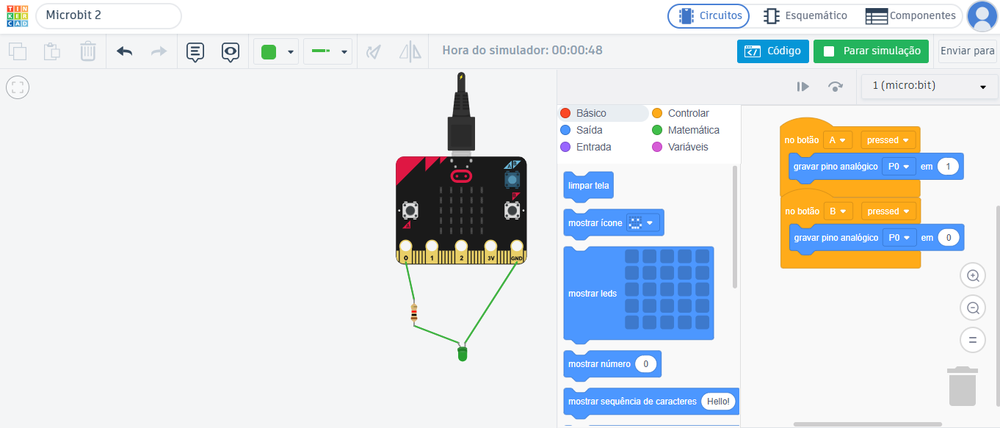

Orientações Gerais
Prezado(a) professor(a), abaixo estão os formulários da pesquisa e as 5 atividades que realizaremos durante nosso encontro. Para cada atividade, você encontrará a visualização dos blocos de programação tanto para o Micro:bit Físico (utilizando o MakeCode) quanto para o Simulador Tinkercad. Siga o roteiro de acordo com a modalidade do momento.
Acesso aos Formulários (Google Forms)
Escaneie o QR-Code com a câmera do seu celular ou clique no botão para abrir o formulário.
Atividade 1 – Apresentar um ícone
Micro:bit Físico (MakeCode)

Simulador Tinkercad

Atividade 2 – Animação cara feliz e triste
Micro:bit Físico (MakeCode)

Simulador Tinkercad

Atividade 3 – Medir a Temperatura
Micro:bit Físico (MakeCode)

Simulador Tinkercad

Atividade 4 – Medir o nível de luz
Micro:bit Físico (MakeCode)

Simulador Tinkercad

Atividade 5 – Acender e apagar um Led usando os botões do Microbit
Micro:bit Físico (MakeCode)

Simulador Tinkercad
